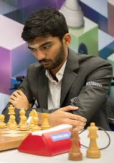

Dommaraju Gukesh (em hindi: डोम्माराजू गुकेश; em telugo: దొమ్మరాజు గుకేష్), mais conhecido como Gukesh D (Chennai, 29 de maio de 2006), é um grande mestre de xadrez indiano e atual Campeão Mundial de Xadrez. Prodígio do xadrez, ele foi a terceira pessoa mais jovem da história a obter o título de Grande Mestre,[1] o mais jovem enxadrista a atingir a marca de 2750 de rating e o terceiro mais jovem a jogar o Torneio de Candidatos.[2] Foi também o mais jovem vencedor do Torneio de Candidatos da história, sendo o desafiante para o título mundial.[3] Aos 18 anos se tornou o mais jovem campeão mundial de xadrez ao vencer Ding Liren no Campeonato Mundial de Xadrez de 2024,[4] quebrando o recorde anterior de Garry Kasparov, que conquistou o título aos 22 anos.[5] Vida pessoal Gukesh nasceu em Chennai, em uma família de origem Telugu de Andhra Pradesh.[6][7] Seu pai, Rajinikanth, é um cirurgião de ouvido, nariz e garganta, e sua mãe, Padma, é uma microbiologista.[8] Ele aprendeu a jogar xadrez aos sete anos de idade.[9] Ele estudou na escola Velammal Vidyalaya, em Chennai.[10] Gukesh começou a praticar e jogar xadrez em 2013 por uma hora, três dias por semana. Ele então participava e jogava torneios nos fins de semana após seu bom desempenho ser reconhecido por seus professores de xadrez.[11] Carreira 2015–2019 Gukesh venceu a seção Sub-9 do Campeonato Asiático de Xadrez Escolar em 2015[12] e o Campeonato Mundial Juvenil de Xadrez em 2018 na categoria Sub-12.[13] Ele também ganhou cinco medalhas de ouro no Campeonato Asiático de Xadrez Juvenil de 2018 nos formatos rápido e blitz individual sub-12, rápido e blitz por equipe sub-12 e clássico individual sub-12.[14] Ele completou os requisitos para o título de Mestre Internacional em março de 2017 no 34º Cappelle-la-Grande Open.[15] Em 15 de janeiro 2019, com 12 anos, 7 meses e 17 dias, Gukesh se tornou o então segundo mais jovem grande mestre da história,[16] superado apenas por Sergey Karjakin por 17 dias.[17] O recorde foi quebrado por Abhimanyu Mishra, tornando Gukesh o terceiro mais jovem.[18][19] Em junho 2021, ele venceu o Julius Baer Challengers Chess Tour, Gelfand Challenge, marcando 14 de 19 pontos.[20] 2022: Ouro individual nas Olimpíadas Em agosto de 2022, ele jogou a 44ª Olimpíada de Xadrez e inicialmente teve uma pontuação perfeita de 8/8, derrotando notavelmente o número 1 dos EUA Fabiano Caruana na oitava partida. Ele terminou com uma pontuação de 9 de 11, ganhando a medalha de ouro no 1º tabuleiro e sua equipe Índia-2 terminou em terceiro no torneio Em setembro de 2022, Gukesh atingiu uma classificação de mais de 2700 pela primeira vez, com uma classificação de 2726.[21] Isso o tornou o terceiro jogador mais jovem a passar de 2700, depois de Wei Yi e Alireza Firouzja.[22] Em outubro de 2022, durante o torneio Aimchess Rapid, Gukesh se tornou o jogador mais jovem a vencer Magnus Carlsen desde que o norueguês se tornou Campeão Mundial.[23] 2023 Na lista de classificação de agosto de 2023, Gukesh se tornou o jogador mais jovem a atingir uma classificação de 2750.[24] Gukesh participou da Copa do Mundo de Xadrez de 2023. Ele chegou às quartas de final antes de ser derrotado por Magnus Carlsen.[25] Na atualização do rating de setembro de 2023, Gukesh ultrapassou oficialmente Viswanathan Anand como o jogador indiano mais bem classificado, sendo a primeira vez em 37 anos que Anand não era o jogador indiano mais bem classificado.[26][27] Em dezembro de 2023, com o fim do Circuito FIDE, Gukesh se classificou para o Torneio de Candidatos de 2024.[28] Gukesh havia ficado em segundo lugar no Circuito, mas Fabiano Caruana, o vencedor, já havia se classificado pela Copa do Mundo.[29] Ele se tornou o terceiro jogador mais jovem a jogar em um torneio de Candidatos, atrás de Bobby Fischer e Magnus Carlsen.[30][31] 2024 Gukesh (esquerda) jogando Alireza Firouzja no Torneio de Candidatos de 2024 Em janeiro de 2024, Gukesh participou do Tata Steel Chess Tournament 2024. Ele marcou 8,5/13 para terminar em um empate de 4 vias para o primeiro lugar. Na décima segunda rodada, ele tinha uma posição vencedora contra R Praggnanandhaa, mas errou em um lance de repetição tripla. Nos tiebreaks, ele derrotou Anish Giri nas semifinais, mas perdeu para Wei Yi nas finais.[32] Em abril de 2024, Gukesh participou do Torneio de Candidatos de 2024. Gukesh venceu partidas contra R Praggnanandhaa e Vidit Gujrathi jogando de pretas, Alireza Firouzja jogando de branca e Nijat Abasov jogando de pretas e brancas.[33] Sua única derrota foi sua partida de pretas contra Firouzja. Isso lhe deu cinco vitórias, uma derrota e oito empates, para uma pontuação de 9/14, vencendo o torneio e se classificando para o Campeonato Mundial de 2024 contra Ding Liren.[34] Ele foi o mais jovem vencedor dos Candidatos, aos dezessete anos.[35][36][37] Em 2024, na 45.ª Olimpíada de Xadrez, realizada em Budapeste, na Hungria, Gukesh liderou a equipe indiana rumo à medalha de ouro no evento. Com uma performance de 3056,[38] ele obteve o melhor desempenho de um jogador em toda a história das Olimpíadas de Xadrez. Com isso, conquistou 9 pontos em 10 possíveis, angariando +30,1 pontos de rating, atingindo seu maior rating ao vivo, de 2794,1. Também conquistou outra medalha de ouro no tabuleiro 1, tendo em vista que foi o melhor enxadrista neste tabuleiro.[39] Gukesh entrou no top-5 mundial da FIDE pela primeira vez em 1 de outubro de 2024.[40][41] Em novembro, teve início o Campeonato Mundial de Xadrez de 2024, sendo jogado pelo campeão Ding Liren contra o desafiante Gukesh D. Na 14.ª e última rodada, em que até então o placar se mantinha empatado, Gukesh venceu Ding, após um erro crasso cometido pelo chinês. Gukesh terminou com 7,5 pontos contra 6,5 de Ding Liren. Em doze de dezembro de 2024, Gukesh tornou-se o 18.º campeão mundial de xadrez,[42] sendo o mais jovem da história ao alcançar o título, aos dezoito anos.[5]